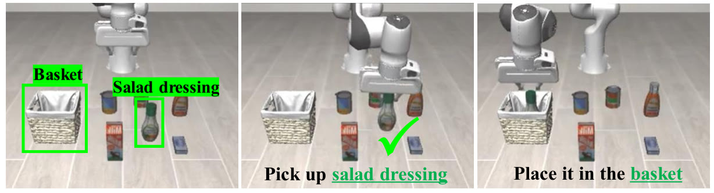
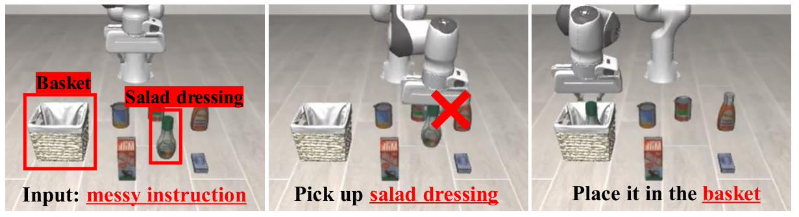

Other groups have already run most of the tests in our plan, and the blank and different-task tests on the very checkpoint we use. This chapter goes through what they found and ends with what still looks open.
Chapter 5 of 612 min readNeeds chapters 1 to 4
After this chapter you can
say which parts of our submitted plan have already been measured, and on which models
quote the published blank-instruction numbers for our checkpoint, and say why Goal's 10.2% is close to one in ten
say in one sentence each how CAG and LangGap's extra data try to fix the problem
In February 2026 a group at the University of North Carolina ran the official with the instruction removed. On LIBERO-Spatial it still did the task 68.2% of the time. On LIBERO-Goal it managed 10.2%. That is the blank arm of our plan, on our model, already published.
Figure 5.1 puts the two results next to the first pictures the robot sees. Each Spatial task starts from its own arrangement of bowls, plate and cabinet, so the picture already says which task this is. All ten Goal tasks start from the same table, so without the sentence the robot can only guess.
LIBERO-Spatial
68.2%
with no instruction 98.8% with it
“…in the top drawer of the wooden cabinet…”“…on the ramekin…”“…from table center…”
LIBERO-Goal
10.2%
with no instruction 98.0% with it
“put the bowl on the plate”“put the bowl on the stove”“turn on the stove”
Figure 5.1 · Three tasks from each suite, as the first camera picture shows them, and π0.5's success with no instruction. The three Spatial tasks each start from their own arrangement. Two of the ten Spatial tasks do share one table, and we come back to them below. The three Goal pictures show one table, and the other seven Goal tasks start from it too. Pictures: physical-intelligence/libero, CC BY 4.0, frame 0 of episodes 1262, 1264, 1283, 379, 392 and 388. Scores: Fang et al. 2026, LIBERO-CF, Table I.
This chapter lists what we found in a search on 2026-11-11, which we rechecked on 2026-11-13. The search wasn't exhaustive, so a paper we missed can still change the picture.
The numbers closest to our plan
The paper is , named after the benchmark it built, and its title is “When Vision Overrides Language” (Fang et al., a spotlight paper at CoRL 2026). It ran each official LIBERO checkpoint in more than one way. V+L means both camera pictures and the instruction, as in normal use. Vision-only means the pictures with the instruction removed. In its first two versions the paper also ran language-only, the instruction with the pictures removed, and the third version, from 4 November 2026, leaves that setting out. Figure 5.2 shows π0.5 with and without the instruction.
LIBERO-CF Table I · success rate in percent
Model
Input
Spatial
Object
Goal
LIBERO-10
Average
π0.5
V+L
98.8
98.2
98.0
92.4
96.9
π0.5
vision-only
68.2
56.6
10.2
71.6
51.7
π0.5
language-only*
0.0
0.0
0.0
0.0
0.0
π0
V+L
96.8
98.8
95.8
85.2
94.2
π0
vision-only
28.0
26.8
3.4
15.6
18.5
π0
language-only*
0.0
0.0
2.2
0.0
0.6
OpenVLA-OFT
V+L
97.6
98.4
97.9
94.5
97.1
OpenVLA-OFT
vision-only
83.2
98.2
10.0
85.0
69.1
OpenVLA-OFT
language-only*
0.0
0.0
3.4
0.0
0.9
Figure 5.2 · π0.5's success rate in each LIBERO suite, with the instruction (gold) and without it (hollow). The dashed mark on the Goal row is 10%, what a robot would score by picking one of the ten Goal tasks at random. Hover a dot for its source. The table is the paper's whole Table I. Rows marked * are in versions 1 and 2 only, and the other rows are the same in all three versions (Table 1 in version 3). π0.5's V+L row matches openpi's own LIBERO README exactly, which is why we read it as the checkpoint we run. Source: Fang et al. 2026, LIBERO-CF, arXiv 2602.17659.
π0.5 with no instruction still does the right task two times in three on Spatial and LIBERO-10, and more than half the time on Object. On Goal it lands at 10.2%, close to the one-in-ten guess from chapter 3. That fits the prediction in chapter 4. Where the table tells the tasks apart, the model can manage without the words, and where it can't, the model can only guess.
The other two models in the table dip on Goal as well. falls to 10.0% there and to 3.4%. Away from Goal they differ a lot. Without the words OpenVLA-OFT keeps 69.1% on average and π0 keeps 18.5%.
A common wrong belief
“π0.5 keeps 68.2% on Spatial with no instruction, so it ignores the words there.”
With the instruction it scores 98.8% on the same suite, so the words are what carry it from 68.2% up to 98.8%. And on the one Spatial pair whose two tasks start from the same table, our own run went from 19 of 20 with the sentence to 8 of 40 without it. The table settles most Spatial episodes by itself, and the words decide the rest.
A different task in the same scene
LIBERO-CF also built 50 new tasks. Each one is a , a different task the robot could do in an existing LIBERO scene, often about an object that was only in the background during training. That is the “different task, same scene” arm of our plan. Figure 5.3 is the paper's own picture of what π0.5 does with such an instruction.
Figure 5.3 · Where the gripper goes. In (a) the colour shows where π0.5 grasped over 50 trials, in two scenes from the benchmark's Spatial part. Given the task it was trained on, the grasps cluster on the black bowl. Asked for the cookie box, they spread between the box and the bowl. With no instruction they centre on the bowl. In (b) the robot is asked for the cookie box twice, and it fails with the bowl on the table and succeeds with the bowl taken away. The paper's caption doesn't say which model (b) shows. Image: Fang et al. 2026, LIBERO-CF, Figure 2, CC BY 4.0.
The paper counts two outcomes for each new task. Faithful means the robot did the task it was asked for, and biased means it did the scene's original training task instead. Averaged over the benchmark's four parts, π0.5 finished the task it was asked for in 13.2% of episodes and the old task in 60.9%. Its , how often the gripper touched the object the instruction named, was 30.8%.
CAG, a fix at run time
LIBERO-CF then proposes Counterfactual Action Guidance, for short. It runs the twice on the same pictures, once with the instruction and once without, and pushes the further in the direction the instruction moved it. Figure 5.4 draws the two runs and the push.
Figure 5.4 · How CAG picks the action it sends. Both runs see the same two pictures, and only the second has no words. The gap between the two actions is the step the words made. CAG takes that step 1.5 times, the weight LIBERO-CF uses for π0.5, and a weight of 1 would send the ordinary action. The drawing shows one number of the action chunk, and the paper applies the same rule to every number in it. The positions are drawn to show the rule, not measured. The rule: LIBERO-CF, equation 2 and section 6.2 (version 3).
CAG works like in image generation, where a model makes one estimate with the text prompt and one without, and the picture is pushed further toward the prompt. CAG comes in two versions. In the training-free one, the run without words is π0.5 itself with the instruction removed, so nothing new is trained. The other version trains a separate model that never sees an instruction and uses it for the run without words. Both run two policies at every call.
The training-free version raised π0.5's grounding rate by 9.7 points and its task success by 3.6 points on LIBERO-CF. Figure 5.5 puts those gains next to what the robot did instead.
Figure 5.5 · π0.5 on LIBERO-CF, before and after training-free CAG, averaged over the benchmark's four parts. The top two rows count the task the robot was asked for, and the bottom two count the scene's old training task. Each arrow points from π0.5 as released to π0.5 with CAG. Hover a dot for its source. Source: Fang et al. 2026, LIBERO-CF, Table 3 (version 3).
So CAG moves π0.5 toward the task it was asked for. Even with CAG, the robot finished the scene's old task more often than the new one, 43.5% of episodes against 16.8%. The version with a separately trained model does better, 21.7% against 36.2%, and there too the old task comes out ahead.
The paper tried several weights. For π0.5 (orange), touching the named object rises from 39.3% at a weight of 1 to 58.4% at 3, while finishing the task peaks at 31.6% at 1.5 and falls to 16.4% at 3. That is why it settles on 1.5. The caption doesn't name the setting, but the numbers at 1 and 1.5 match its CF-Spatial results with a separately trained model (our reading).
This is the version with a separate model. The bottom branch is a vision-action model, trained on the same LIBERO data with the instructions left out, and it supplies the action without words. In the training-free version π0.5 itself fills that branch.
The paper fine-tuned π0.5 on a real Franka arm with 20 demonstrations of one task in each scene and one or none of the others. Here the three cans have the same shape and differ only in look, and each photo shows one can being picked. With CAG and a separately trained model, grounding rose by 9.4 points and success by 17.2 on average across its real scenes.
Fang et al. 2026, LIBERO-CF, Figure 5 (first scene), CC BY 4.0
The other papers
Five more papers come close to our question. The LIBERO-PRO, LIBERO-Plus, LangGap and Grant et al. entries come from their abstracts and project pages, plus the first two sections of LIBERO-PRO's paper. We haven't read their full tables yet.
LIBERO-PROZhou et al., Oct 2025
What they did
Changed the objects, the starting positions, the instructions and the scenes around the robot.
What they found
Models above 90% fall to 0.0% in the changed settings. Their outputs stayed the same when the instruction was corrupted or replaced by meaningless tokens.
Read: abstract, and sections 1 and 2 of the paper (CC BY 4.0)
LIBERO-PlusFei et al., Oct 2025 · CVPR 2026
What they did
Built 10,030 task variants across seven kinds of change, among them instructions rewritten by a language model.
What they found
Models are largely insensitive to changes in wording and tend to ignore the instruction. A new camera angle or a new starting pose for the arm hurt most.
Read: abstract and project page
LangGapHou and Zhao, Feb 2026
What they did
Gave π0.5 new tasks that share one fixed layout, then trained it on extra data aimed at those tasks, a kind of .
What they found
The extra data raised success from 0% to 90% when trained on one task, but only from 0% to 28% with many tasks. As the tasks grew more varied, the model's capacity looked like the limit.
Read: abstract
Not All Features Are Created EqualGrant, Zhao and Wang, NeurIPS 2026 and an ICLR 2026 workshop
What they did
Looked inside π0.5, OpenVLA-OFT and other models with , and .
What they found
Language matters only when the picture doesn't settle the goal. Inside the model, different prompts can be told apart with 99.3% accuracy while the behaviour stays the same. With an empty prompt their π0.5 kept 31.6% on LIBERO-Object and 5.8% on Goal, against 91.0% and 92.6% with the prompt.
Read: abstract and project page (the 99.3% from its March 2026 version, the empty-prompt numbers from the version read on 2026-11-13)
Mechanistic Interpretability for Steering VLAsHäon et al., CoRL 2025
What they did
Found directions inside π0's and 's layers that go with behaviours such as speed and direction.
What they found
Pushing on those directions, , steers the robot while it runs, in LIBERO and on a real arm.
Read: abstract and the paper (CC BY 4.0)
LIBERO-PRO's paper shows the meaningless-token case in pictures. Figure 5.6 is its Figure 3.
The instruction · pick up the salad dressing and place it in the basket

The instruction · fdsgfdsgsd and other nonsense

Figure 5.6 · The same motion for a real instruction and for nonsense. In the top row the policy is asked to pick up the salad dressing and place it in the basket, and it does. In the bottom row the instruction is a meaningless string such as “fdsgfdsgsd” or “xxx”, and the policy still picks up the salad dressing and puts it in the basket. The paper marks that pick-up with a red cross. It evaluates OpenVLA, π0 and π0.5 and doesn't say which one these frames show. Image: Zhou et al. 2025, LIBERO-PRO, Figure 3, CC BY 4.0.
Häon et al. project the vectors in each feed-forward layer onto the model's word tokens, find clusters that mean things like “fast” or “up”, and turn a cluster up while the robot runs. On their real arm, turning a cluster up changed the motion more than adding the same word to the prompt did.
The project page shows rollout videos for each of its seven kinds of change, among them instructions rewritten in longer words. In its blank-instruction test, some models barely changed with no valid words at all. The paper's licence doesn't let us copy its figures, so here is the link.
An interactive site with the paper's sparse-autoencoder features for each model and a library of more than 10,000 rollout videos you can filter by model, suite, experiment and outcome.
LangGap's benchmark and code are announced in its repository. LIBERO-CF's repository holds the 50 counterfactual tasks and a CAG version for openpi, the library our checkpoint comes from.
This part is our reading, written to be argued with. Figure 5.7 puts the papers next to the arms of our submitted plan.
Original sentencethe task's own words
openpi README · pi05_liberoLIBERO-CF · Table I, V+L
Paraphrasethe same request in other words
LIBERO-PRO · reworded instructions, OpenVLA, π0 and π0.5LIBERO-Plus · instructions rewritten by a language model
Blankno instruction at all
LIBERO-CF · Table I, vision-onlyLIBERO-PRO · nonsense tokensLIBERO-Plus · blank-instruction testGrant et al. · empty prompt
Different task, same scenea counterfactual instruction
LIBERO-CF · 50 new tasksLangGap · new tasks on one layoutLIBERO-Plus · target object swapped
When reading stopsacross the steps of fine-tuning
none found in our search on 2026-11-11 · our reading
measured on pi05_libero, our checkpointother models, or a setup we haven't checkednothing found
Figure 5.7 · The arms of our plan, and who has measured each. We read LIBERO-CF's runs as our checkpoint because its V+L row matches openpi's own numbers exactly. The last row is our reading of a search that wasn't exhaustive. Sources: the papers in this chapter; chapter 6 lists the plan as we submitted it.
The blank and different-task arms of our plan have been measured for pi05_libero, and the arm has been run at benchmark scale by LIBERO-PRO and LIBERO-Plus. Running the plan as submitted would mostly reproduce known results.
We found no study that tracks when during fine-tuning the model stops reading. The base π0.5 was trained to follow language. Somewhere between pi05_base and pi05_libero, reading stopped mattering outside LIBERO-Goal.
LangGap and Grant et al. both point at the training data, where one instruction per scene lets the picture stand in for the words. How much scene-sharing the data needs before the model reads is measured only in part.
CAG fixes the problem at run time. Whether a cheap change does as well on the same tests is open.
Chapter 6 holds the options we weighed with these results in hand, and the decisions made so far.
Check yourself
Which arm of our submitted plan has already been published for our exact checkpoint, and what did it show?
Show answer
The blank-instruction arm (LIBERO-CF, Table I). π0.5 kept 68.2% on Spatial, 56.6% on Object and 71.6% on LIBERO-10, and fell to 10.2% on Goal. The different-task arm was published for it too, in LIBERO-CF's 50 new tasks.
Why does π0.5's 10.2% on LIBERO-Goal with no instruction fit the explanation from chapter 4? Say it in your own words.
Show answer
All ten Goal tasks start from the same picture, so without words the model can only guess among ten, which gives about one in ten.
In one sentence each, how do LIBERO-CF's CAG and LangGap's augmentation try to fix the problem?
Show answer
CAG runs the policy with and without the instruction at test time and amplifies the difference the instruction makes. LangGap trains on extra data where tasks share a layout, so the model has to use the words.
In questions 4 to 9, pick the answer you think is right. The option opens and says whether it's right and why, and you can open the others afterwards to see what's wrong with them.
π0.5 scores 68.2% on LIBERO-Spatial with no instruction. What does that tell you?
It ignores the words on Spatial, since it does the task without them.
No, and this is the wrong belief the chapter names. With the words it scores 98.8%, so the words still carry it from 68.2% up to 98.8%. On the Spatial pair that shares a table, our run fell from 19 of 20 to 8 of 40 without them.
The starting table settles most Spatial episodes, and the words still decide the rest.
Right. All but two Spatial tasks start from their own arrangement, so the picture names the task most of the time. The gap up to 98.8% is the part the words decided.
It understands spatial words such as “between” well enough to work out the task.
No. With no instruction there are no spatial words to understand. The 68.2% comes from the picture alone, which names most Spatial tasks by their arrangement (chapter 3).
Why does π0.5 land at 10.2% on LIBERO-Goal with no instruction?
All ten Goal tasks start from the same table, so without words it can't tell which one is wanted.
Right. With one picture for ten tasks, a policy that ignores the words can at best pick one of them, which works about one time in ten. That was chapter 3's arithmetic and chapter 4's prediction.
Goal's tasks are harder to carry out, so it fails them more often.
No. With the instruction it scores 98.0% on Goal, about as high as anywhere. What it loses without the words is the only way to tell the ten tasks apart.
Without an instruction the robot doesn't move at all.
No. Without words it still finishes a Goal task 10.2% of the time, and two Spatial tasks in three, so it moves. On Goal it just can't know which of the ten tasks is wanted.
CAG runs π0.5 once with the instruction and once without. With the weight LIBERO-CF uses for π0.5, which action does it send?
The average of the two actions.
No. The average would be a weight of 0.5, halfway back toward the action without words. CAG goes the other way, past the action with words.
The action without words, because the picture alone is the more reliable guide.
No. That would be a weight of 0. The action without words is only the point the push is measured from.
The action with words, pushed half as far again in the direction the words moved it.
Right. The weight is 1.5, so the action sent is the one without words plus 1.5 times the difference the words made (figure 5.4).
On LIBERO-CF, training-free CAG raised π0.5's success on the task it was asked for from 13.2% to 16.8%. What did the robot finish most often, even with CAG?
The task it was asked for.
No. 16.8% is well under half. The scene's old training task came out more often, in 43.5% of episodes with CAG.
The scene's old training task.
Right. With CAG it finished the old task in 43.5% of episodes and the asked-for one in 16.8%. CAG moved both numbers the right way, and the old task still came out ahead (figure 5.5).
Nothing, because running the policy twice made it freeze.
No. The paper counts finished tasks, and with CAG the old one was finished in 43.5% of episodes. CAG made the old task less likely and the new one more likely.
LangGap's extra data took π0.5 from 0% to 90% when it trained on one new task, and from 0% to 28% when it trained on many. What did the authors read from this?
Targeted data helps, but as the tasks grow more varied the model's capacity looks like the limit.
Right. That is their reading in the abstract. The data partly closes the gap, and with more varied tasks even the trained ones did poorly.
Extra data solves the problem, since one task reached 90%.
No. The 90% is for a single task. With many tasks it reached only 28%, and the authors say even trained tasks performed poorly.
The model can't learn new tasks in a layout it already knows.
No. It went from 0% to 90% on one new task, so it can learn one. The trouble starts when many varied tasks share the layout.
Which arm of our plan did our search find no study for?
The blank instruction.
No. LIBERO-CF's Table I measured it on our exact checkpoint: 68.2%, 56.6%, 10.2% and 71.6%.
The paraphrase.
No. LIBERO-PRO and LIBERO-Plus both tested reworded instructions at benchmark scale, though we haven't checked that either used our checkpoint.
When during fine-tuning the model stops reading the words.
Right, as far as our search on 2026-11-11 went. None of the studies we found follows the words' effect across the training steps from pi05_base to pi05_libero. That is our reading, and the search wasn't exhaustive.
Sources
Fang et al. (2026), When Vision Overrides Language: Evaluating and Mitigating Counterfactual Failures in VLAs (LIBERO-CF), CoRL 2026 spotlight per the arXiv comments. arXiv 2602.17659, CC BY 4.0: version 1 (19 Feb 2026), 2 (15 Jul 2026) and 3 (4 Nov 2026). Table I (versions 1 and 2; Table 1 in version 3), Table 3, equation 2 and the guidance weight of 1.5 for π0.5 (section 6.2), Figures 2 to 5, all read in the arXiv HTML on 2026-11-13. Project page vla-cf.github.io, code github.com/yuffish/VLA-CF.
Zhou et al. (2025), LIBERO-PRO: Towards Robust and Fair Evaluation of Vision-Language-Action Models Beyond Memorization. arXiv 2510.03827, CC BY 4.0. The abstract, sections 1 and 2 and Figure 3 of version 2, read 2026-11-13. Code github.com/Zxy-MLlab/LIBERO-PRO.
Fei et al. (2025), LIBERO-Plus: In-depth Robustness Analysis of Vision-Language-Action Models, CVPR 2026. arXiv 2510.13626 (arXiv's default licence, so no figures are copied) and the project page sylvestf.github.io/LIBERO-plus, read 2026-11-13.
Hou and Zhao (2026), LangGap: Diagnosing and Closing the Language Gap in Vision-Language-Action Models. arXiv 2603.00592, submitted 28 Feb 2026 (arXiv's default licence). Abstract read 2026-11-13.
Grant, Zhao and Wang (2026), Not All Features Are Created Equal: A Mechanistic Study of Vision-Language-Action Models. arXiv 2603.19233 (arXiv's default licence; six versions, the latest 2 Nov 2026). The 99.3% is from the project page as archived on 20 Mar 2026 (web.archive.org); the current project page, read 2026-11-13, says more than 99% and gives the empty-prompt numbers. Action Atlas: action-atlas.com.
Häon, Stocking, Chuang and Tomlin (2025), Mechanistic Interpretability for Steering Vision-Language-Action Models, CoRL 2025. arXiv 2509.00328, CC BY 4.0, read 2026-11-13. Project page vla-mech-interp.github.io.
Ho and Salimans (2022), Classifier-Free Diffusion Guidance. arXiv 2207.12598, abstract read 2026-11-13.
Our experiment 1 on 2026-11-11, the LIBERO-Spatial pair that shares a table: stage1/results/exp1-shared-table.md in our repository. The shared table itself was found in LIBERO's task files (chapter 3).


![Left, panel (a): six simulator pictures with a heat map of grasp positions. Top row, case 2: with 'Pick up the black bowl' the heat sits on one bowl; with 'Pick up the cookie box' it spreads from that bowl to the box; with no instruction it sits on the bowl. Bottom row, case 1: the same pattern for 'Pick up the black bowl from table center'. Right, panel (b): two rows of four frames for 'Pick up the cookie box and place it on the plate'. With the training-task bowl present the arm grabs the bowl and fails three times; with the bowl removed it lifts the cookie box onto the plate.](../assets/img/ch5/libero-cf-fig2-vision-shortcuts.jpg)